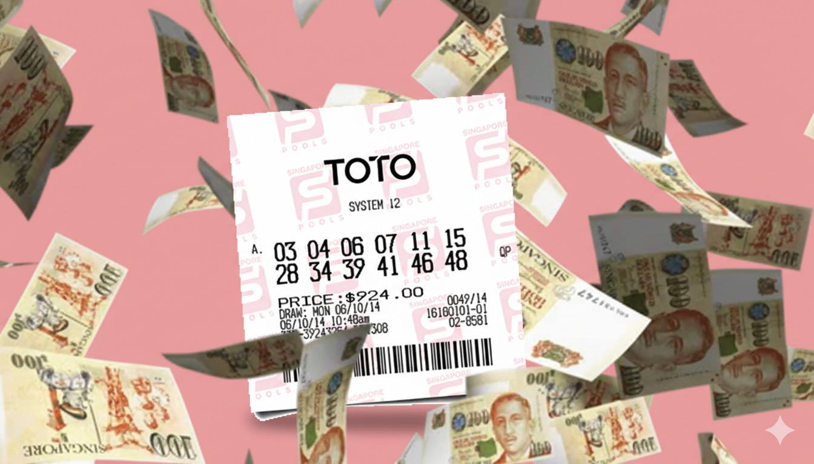
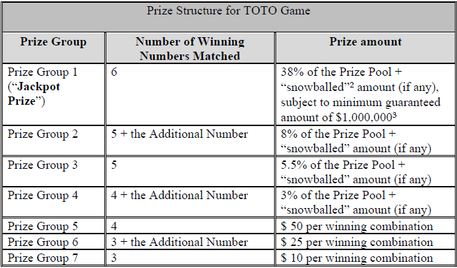

Can You Beat TOTO? A Statistical Analysis of Singapore’s National Lottery

TOTO Analysis
With AI coming for our jobs and the risk of rising inflation, making decent money is becoming a tougher challenge with each passing year. In these tumultuous times, the desperate look to the heavens for a miracle - the miracle of winning the lottery! As a Singaporean, that means praying at the foot of the temple of TOTO, our national lottery boasting cash payouts of up to $13 million thus far.
In this post, we analyse the lottery draws of TOTO to determine if it can be predicted (it can’t), and find out if the house (or TOTO temple, or Tote board) always wins.
TOTO lottery rules: how to pray play
TOTO is a 6 out of 49 Lotto-style game, with 1 additional number. A single $1 lottery ticket allows you to pick 6 numbers with no repeats, from a range of 1 to 49 inclusive. During the draw, a total of 7 numbers are drawn - prizes are paid out depending on how many numbers on your ticket matches the numbers of the draw (and number order does not matter).
Prize Structure
TOTO distinguishes the first 6 numbers from the 7th additional number for the purposes of prize payouts. Here is the prize structure, direct from Singapore Pools (TOTO’s managing organisation).

Note that Groups 1 to 4 receive a payout that is a percentage of the Prize Pool, while Groups 5 to 7 receive a fixed payout.
Also note that Groups 1 to 4 benefit from “snowballing”, in which un-won prize money from previous draws are rolled over to the current draw (limited to 4 rollovers).
Finally, note that Group 1’s jackpot payout is guaranteed by Singapore Pools to payout a minimum of $1,000,000. The top-up of the prize amount will come from Singapore Pools’ own pocket.
The Data
To inform our analysis, 15 years of data comprising 1808 draws were obtained from this website. Cursory data validation was performed by checking the two most recent draws against TOTO’s website, which I had bought tickets “for research”.
Since the TOTO rules were updated from “6 out-of 45” to a “6 out-of 49” format in October 2014, this gives us 1154 useable draws in the current format.
The data contains the 6+1 draw numbers, as well as prize amount and number of winners for each of the 7 prize groups.
What We Want to Investigate
With the dataset, we can attempt to answer two questions:
- Can we win money by predicting the next draw of winning numbers?
- Even if we don’t win, does “the house always win”?
How to Predict TOTO Draws
Spoiler Alert: You can’t. But the real fun is in understanding why, and accepting your fate, right?

Probability of Winning
As a risk averse (i.e. kiasu) Singaporean, I want to play the game knowing my chances. So lets math it out. Here we will make heavy use of the binomial coefficient formula to determine how many combinations are possible when picking \(r\) numbers from a set of \(n\) numbers. The formula is:
\[ C(n,r)=\frac{n\times(n-1)\times \dots\times (n-r+1)}{r \times (r-1) \times \dots \times 1} \]
The number of combinations for a single TOTO ticket of six numbers is \(C(49,6)=13,983,816\).
With reference to the prize structure table above, lets calculate the number of combinations to win Group 7. First you would need to match three of the six winning numbers, so \(C(6,3)=20\). Then not match the additional number, so \(C(1,0)=1\). You still have to fill your ticket with three more numbers, which can be any combination of the 42 remaining undrawn numbers, so \(C(42,3)=11,480\). Hence, the number of ways you can win Group 7 is:
\[ \text{Number of Ways to Win Group 7} = C(6,3)\times C(1,0) \times C(42,3)=229,600 \]
The probability of winning Group 7 is the number of ways to win it divided by the total possible ways to form a TOTO ticket, so \(229600/13983816 = 1.64\%\)
Lets do the same calculation for all the prize groups.
| Group | Number of Ways to Win the Group | Probability \(P(Win_i)\) |
|---|---|---|
| 1 | \(C(6,6)\times C(1,0) \times C(42,0)=1\) | 0.000007 % |
| 2 | \(C(6,5)\times C(1,1) \times C(42,0)=6\) | 0.00004 % |
| 3 | \(C(6,5)\times C(1,0) \times C(42,1)=252\) | 0.0018 % |
| 4 | \(C(6,4)\times C(1,1) \times C(42,1)=630\) | 0.0045 % |
| 5 | \(C(6,4)\times C(1,0) \times C(42,2)=12915\) | 0.0924 % |
| 6 | \(C(6,3)\times C(1,1) \times C(42,2)=17220\) | 0.1231 % |
| 7 | \(C(6,3)\times C(1,0) \times C(42,3)=229600\) | 1.6419 % |
Summing the probabilities, the chance of winning any prize is approximately 1.84%. That’s only marginally better than flipping a coin and getting tails six times in a row.
Expected Value of Winning
Okay, but even if the odds are small, we should keep playing because the payouts are big, right?
We can calculate the expected value for Groups 5 to 7 easily, since they have fixed payouts of $50 to $10. For Group 7,
\(\mathbb{E}[Payout_7]=P(Win_7) \times Prize_7 = 0.016419 \times \$10 = \$0.16\)
What about Groups 1 to 4, with a variable prize which is a percentage of the total prize pool? First, we must recognise that:
- The prize pool is 54.5% of the total sales $\(N\) (more on this later)
- One ticket is $1
Let the percentage of the prize pool for group \(i\) be \(Pct_i\), then
\(\mathbb{E}[Payout_i] = P(Win_i)\times \mathbb{E}[Prize_i]\)
\(\mathbb{E}[Payout_i] = P(Win_i)\times \frac{N\times 0.545\times Pct_i}{N \times P(Win_i)}\)
\(\mathbb{E}[Payout_i] = 0.545 \times Pct_i\)
| Group | Probability | \(\mathbb{E}[Payout_i]\) |
|---|---|---|
| 1 | 0.000007 % | $0.2071 |
| 2 | 0.00004 % | $0.0436 |
| 3 | 0.0018 % | $0.0300 |
| 4 | 0.0045 % | $0.0164 |
| 5 | 0.0924 % | $0.0462 |
| 6 | 0.1231 % | $0.0308 |
| 7 | 1.6419 % | $0.1642 |
And so the expected value of winning any group is $0.54. Statistically speaking, if you totalled your profits and losses across your natural lifetime, you would only get back 54% of what you put in. Ouch. But what if - like my dear grandmother - you had a system for picking those TOTO numbers? Could you “beat the odds”?
Hot and Cold Numbers
One method of picking TOTO numbers is based off the frequency they are drawn. Some people think numbers that occur more frequently will continue to occur frequently (hot), while others think numbers that occur less frequently are due to appear soon (cold).
But what is “more” or “less” frequent?
To determine if a number occurs more or less frequently, we have to compare it to some expected frequency. Lets work out what this expected frequency is.
For a number \(i\), the probability of \(i\) being drawn is \(P(i \text{ is drawn}) = 7/49\), because there are 7 chances to draw a number, and there are 49 TOTO numbers. There are two possible outcomes for the number \(i\), drawn or not drawn. This means that each number follows a binomial distribution.
Through careful inspection of the 49 balls in the cool glass contraption in the image above, we can hypothesize that each number is equally likely to be drawn. Furthermore, picking a number \(i\) does not affect the probability of picking a number \(j\), so all 49 TOTO numbers are independently and identically distributed (i.i.d).
For a binomial distribution, the average or expected frequency is \(np\), where \(n\) is the number of TOTO lottery draws (1154 in our dataset), and \(p = P(i \text{ is drawn}) = 7/49\). Then the expected frequency is:
\[ \mathbb{E}[i \text{ is drawn in dataset}] = np = 1154\times 7/49=164.86 \]
Lets see what the data shows.

Here we see a plot for all 49 TOTO numbers on the horizontal axis, and the number of occurrences on the vertical axis. The red horizontal line depicts the expected number of occurrences for the dataset (164.86). Hot numbers appear above the line, Cold numbers appear below the line.
The top 6 hottest and coldest numbers are labelled for you lucky cats out there.
Is the data statistically significant?
Before you rush off to dump your life savings into the next TOTO draw, lets check whether the variation we are seeing could be explainable by the variance in the underlying probability distribution. The variance of a binomial distribution is calculated as:
\[ Var[i\text{ is drawn in dataset}] = np(1-p) = 1154 \times 7/49 \times 42/49 = 141.3 \]
And the standard deviation is thus \(\sigma_n=\sqrt{141.3}=11.88\). For the “hottest” TOTO number 15 appearing 189 times in the dataset means that it is \((189-164.86)/11.88 = 2.03\sigma\), or approximately 2 standard deviations from the mean.
In other words, if a TOTO number truly does follow a binomial distribution (and the number of TOTO draws is large like in our dataset here), then we would expect occurrences of \(2\sigma\) to appear approximately 5% of the time, or 2 to 3 of the 49 TOTO numbers. Indeed, the data shows TOTO numbers 15 and 45 are the two numbers that deviate by \(\geq2\sigma\).
Doubling Down… on Math
“But wait!” you say, putting your TOTO tickets aside for a moment. “That’s just back-of-the-envelope math, and all I have is this TOTO ticket to scribble on! Maybe there are other hot or cold numbers?”
You’re right, we’ve only looked at the hottest and coldest numbers so far. A complementary check we could perform would be the Chi-Square Test, denoted by the formula
\[ \chi^2 = \sum_{i=1}^{49}\frac{(o_i - e_i)^2}{e_i} \]
Where \(o_i\) and \(e_i\) are the observed and expected number of occurrences for the TOTO number \(i\) respectively.
While previously we were looking at individual outlying TOTO numbers, here the Chi-Square test checks all 49 TOTO numbers to see if each and every TOTO number follows a binomial distribution. More specifically, the value of \(\chi^2\) represents the sum of deviations from the expected occurrences, which can be checked against the Chi-Square distribution to obtain the probability that all TOTO numbers have a fair chance of being drawn (which we call the null hypothesis).
From calculation, \(\chi^2=32.73\), and with \(49-1=48\) degrees of freedom, the p-value obtained is \(95.48\%\) (probability of the dataset representing samples of a fair TOTO draw).
Unfortunately, the data shows that TOTO is very likely not rigged, and every TOTO number has an equally likely probability of occurring.
A Slight Detour into Psychology
Gambling is interesting to me because its analysis sits at the intersection of math and psychology. This perception of hot and cold numbers has been comprehensively documented under the term “The Gambler’s Fallacy”. The little voice in our head insisting that previously absent numbers should appear soon suggests some link between previous TOTO draws and current ones. That the mathematical reality is that each draw is independent from past and future draws also requires some manner of belief; in the infallible logic of math.
But wait, I have a SYSTEM!
We’ve already shown that the TOTO game is mathematically fair, with strong evidence from the 15 years of historical results. That does not mean that TOTO is impossible to win, merely that any combination of six TOTO numbers are equally likely to win. And for some people, spending a dollar to “buy hope” (买希望 in mandarin) is still worth it. Lets conclude this section with some data visualisation. Instead of letting the TOTO system pick numbers for you at random, maybe you can use the figure below to pick for yourself. But really, I just want to show you some colourful plots I made.
The system I propose is based on co-occurrence, and is detailed as follows:
- Starting from a hand-picked initial number \(a\), you find the most commonly paired number \(b\).
- From \(b\), find the next most commonly paired number \(c\).
- Repeat until you get all six numbers for your TOTO ticket
- Profit???
Lets first visualise the co-occurrences of every pair of numbers in a heatmap plot. The plot is symmetrical about its diagonal, because the number of occurrences for TOTO number pair \((a,b)\) is the same as pair \((b,a)\). The diagonal for pair \((a,a)\) is ignored and arbitrarily set to 0. Green boxes indicate pairs that are drawn frequently, while red boxes indicate rarely drawn pairs.

We should also note that all pairs have been seen at least once. The actual co-occurrence ranges from 9 to 40.
The heatmap contains useful information, but is difficult to read in detail. We can visualise it as a network graph, with each node representing a single TOTO number. Connections (i.e. edges) between the TOTO numbers represent pairs, and the closer the nodes are to each other, the more frequently the corresponding pairs occur in the dataset. The larger the node, the more connections it has.
Note that we are only displaying the top 20% of edges, because the graph is fully connected and the visualisation would be really challenging to read otherwise.

Now we are ready to pick numbers. Starting from your favourite number, traverse the network until you get all six TOTO numbers on your ticket. If you selected each node based on node size, this means you now have the most historically frequent set of numbers which also include your favourite number!
Reminder: past performance does not guarantee future performance, and this system is by no means mathematically optimal. Although if you do win, please consider buying me a coffee (with a sprinkling of gold flakes and diamonds in it).
Does the House Always Win?
Its interesting how games of chance are designed in a way to give gamblers a sense of hope (and maybe some measure of control) in securing a win, and yet casinos in Vegas are sitting on actual piles of cash year after year. Singapore Pools is no different, with $575M in contributions to the Tote Board for the 2025 financial year. Since the Tote Board collects “surplus” from Singapore Pools, lets just call this their net profit for the year. That’s a pretty hefty sum by most accounts.
So how does Singapore Pools do it? Its pretty blatant actually - here’s a screenshot from the official TOTO Game Rules:

Simply put, only 54.5% of collected TOTO ticket sales is channelled into the prize pool. Singapore Pools skims 45.5% right off the top before the draw! Here’s a Sankey diagram, which also depicts the payouts for each group.

Is there any hope for the little guy out there? ****Even if we don’t win, is there a way to ensure mutual destruction by having Singapore Pools lose money? That’s what we’re here to find out, with the help of math.
Loss Conditions for Singapore Pools
Lets first define losses to Singapore Pools, then we can find the conditions in which they occur.
Definition 1: For a given TOTO draw, the total payouts exceed the allotted 54.5% of total sales. This is the “weak” version of loss, since it just means Singapore Pools obtains less income for that draw.
Definition 2: For a given TOTO draw, the total payouts exceed total sales. This is the “strong” version of loss, since Singapore Pools experienced negative income and would have to dig into their treasury to service the payouts owed to the ticket winners.
Conditions for “Weak” Loss
Inspecting the TOTO rules, there are two scenarios in which Singapore Pools would suffer a weak loss. Some combination of these scenarios would be required for a weak loss per draw.
- Ticket sales are so low for a draw that Singapore Pools have to top up the Group 1 prize in order to meet the minimum amount of \(1M. This occurs when\) < 10^6$ \((N\times 0.545) \times 0.38 < 10^6\) \(N < 4,828,585 \text{ tickets}\)
- The total (fixed amount) payouts for groups 5 to 7 exceed the allotted amount of 24.80% of total sales, requiring payouts taken from the 45.5% of total sales skimmed off for Singapore Pool’s income (this scenario assumes groups 1-4 are paid out as well). \(0.248 N < Payout_{5,6,7} < 0.703N\)
Before we can analyse the data, we need to create the required features first. The dataset only provides Group \(i\) payouts and number of winners - thankfully, we have sufficient information to find the ticket sales (i.e. the value of \(N\)). Within the time range of the dataset, there has always been at least one winner in group 3, meaning the prize payouts have never been rolled over (“snowballed”). Knowing that group 3 is paidout 3% of total sales, we can find \(N=Prize_3 / 0.03\).
Historical Occurrences of “Weak” Loss
Condition 1: Low Ticket Sales
Now, lets see if condition 1 for weak loss has ever occurred in our dataset. In the following figure, we plot the total sales amount, compared against the $4.8M sales threshold where topup of group 1 prize is required.

In total, 12 draws were found that required topup. 10 of those draws occurred in the period of July to September 2020, which was the year when Singapore locked down for Covid-19. Looks like Singaporeans were sensible enough to prioritise their health over queueing for a TOTO ticket in those tumultuous times.
2 July 2020 marked the lowest total sales in the history of the updated game at only $4.05M. Singapore Pools had to topup $161K into the group 1 prize amount. (Unfortunately, no one won the group 1 prize on that draw)
Condition 2: Many Group 5 to 7 Winners
Since the prize pool is 54.5% of total sales, and groups 1 to 4 are allocated 54.5% of the prize pool, it follows that groups 5 to 7 are allocated the remaining 45.5% of the prize pool.

From the dataset, 43% of the TOTO draws see Singapore Pools suffering a weak loss. In draws where Singapore Pools loses, we also see larger variance in the payouts, such as 2 May 2016 where group 5 to 7 payouts exceeded 90% of the total prize pool.
Interestingly, the average payouts for groups 5 to 7 across the dataset is 46.1% of the price pool, which is 0.6% above the allocated payout amount.
Both Conditions Combined
The actual impact of a weak loss can be measured when we assess both conditions as a whole. This is achieved by plotting the payouts for all groups as a percentage of total sales. With reference to the TOTO rules, Singapore Pools expects the sum of all payouts to be ≤54.5% of total sales.

Here we see that Singapore Pools win 61% of the draws (win meaning it takes more than the expected 54.5% as income), an increase from the 56% house-win rate from condition 2. This is likely due to the draws where groups 1 to 4 do not have any winners - the savings from not having to payout those larger prizes offsets the small-prize payouts of groups 5 to 7.
Note also that there have been no payouts >100% of total sales, which means that Singapore Pools have never experienced the “strong” definition of loss in any draw. By this definition of loss, Singapore Pools (a.k.a. “the House”) has indeed always won.
Year-on-Year Income
Thus far we have been analysing the dataset per-draw, whereas corporate accounting typically analyses the income on an annual basis.

In this figure, we see Singapore Pools’ actual income versus expected income (45% of total sales) for each full year, from 2015 to 2025. The difference between actual and expected income is also plotted in the red lineplot. 7 out of the 10 years assessed showed lower-than-expected income, indicating weak loss.
Conditions for “Strong” Loss
From analysis of the data, we now know that total payouts have never exceeded total sales per draw - Singapore Pools have never experienced a strong loss. But could it though? Are there conditions that increase the probability of a strong loss occurring?
Recall that the condition for a strong loss is expressed as:
\[ \sum_{i=1}^7 \text{payout}_i > N \]
Where \(N\) is ticket sales ($1 per ticket), and \(i\) represents the prize group number.
Since groups 1 to 4 prizes are defined as a function of the prize pool, payouts will never exceed the allocation (ignoring the $1M topup rule for simplicity).
It thus falls to groups 5 to 7 with fixed prizes to win more than their allocation, expressed as:
\[ \sum_{i=5}^7 \text{payout}_i > N -\sum_{i=1}^4 \text{payout}_i \]
\[ \sum_{i=5}^7 \text{payout}_i > N -(N\times 0.545 \times 0.545) \]
\[ \sum_{i=5}^7 \text{payout}_i > 0.703N \]
Lets re-write \(\text{payout}_i\) to be more explicit.
\[ 50W_5 + 25W_6 + 10W_7 > 0.703N \]
Where \(W_i\) represents the number of winning tickets per group \(i\), multiplied by the fixed prize payouts for each group.
We should also note that \(W_i=X_1 + X_2 + \dots + X_N\), where each \(X_k \in [0,1]\) is an indicator variable on whether ticket \(k\) has won in group \(i\). This implies that \(X_k\) is a Bernoulli random variable, and \(W_i\) thus follows a Binomial distribution.
But if \(N\) is large enough, then Central Limit Theorem allows us to treat \(W_i\) as normally distributed! The rule of thumb here is \(Np\geq 10\) and \(N(1-p)\geq 10\). Lets check this.
| Group \(i\) | Lowest recorded \(N\) | \(p_i=P(Win_i)\) | \(Np_i\) | \(N(1-p_i)\) |
|---|---|---|---|---|
| 5 | 4048473 | 0.00092357 | 3739 | 4044733 |
| 6 | 4048473 | 0.00123142 | 4985 | 4043487 |
| 7 | 4048473 | 0.01641898 | 66471 | 3982001 |
Since \(Np >>10\) and \(N(1-p) >> 10\), it’s safe to proceed with Central Limit Theorem!
\(W_i\) is approximately normal, with mean \(\mu_i=\mathbb{E}[Win_i]\) and variance \(\sigma_i^2=Np_i(1-p_i)\).
And by extension, fixed prize payouts \(50W_5 + 25W_6 + 10W_7\) are also normally distributed, with mean \(\mu=\sum_{i=5}^7\mathbb{E}[Win_i]\) and variance \(\sigma^2=\sum_{i=5}^7Np_i(1-p_i)\).
Lets expand the terms.
\[ \mu = 50Np_5 + 25Np_6 + 10Np_7 = 0.241N \]
\[ \sigma^2 = 50^2Np_5(1-p_5)+25^2Np_6(1-p_6) + 10^2Np_7(1-p_7) = 4.69N \]
\[ \sigma=\sqrt{\sigma^2}=2.17\sqrt{N} \]
Having approximated the fixed price payouts as normally distributed, we can find the Z-score via conversion to a standard normal distribution. The strong loss threshold we are looking at is \(0.703N\), which converts to the Z-threshold as \(\frac{0.703N-\mu}{\sigma} = 0.213\sqrt{N}\)
To be clear, we have made the equivalence that \(P(payout > 0.703N) = P(Z > 0.213\sqrt{N})\)
What’s the probability of strong loss occurring?
Well, it depends. In the following figure we plot the probability \(P(Z > 0.213\sqrt{N})\) for varying values of \(N\).

Note that the probability of a strong loss occurring increases as ticket sales decreases. This probability drops below 5% after 60 tickets have been sold, and below 1% after 120 tickets. That’s a “sure win” for Singapore Pools to me.
But wait! How is it that when ticket sales are smaller, there’s a higher probability of Singapore Pools suffering a strong loss? That’s confusing.

But here’s the thing: Singapore Pools suffers a strong loss as a proportion of \(N\).
\[ \text{Strong Loss Occurs} \rightarrow \text{Payout Groups 5 to 7} > 0.703N \]
Equivalently,
\[ \text{Payout Groups 5 to 7}/N > 0.703 \]
The average payout for fixed prize groups just has to be larger than 70.3cents.
Note also that the standard deviation reduces as \(N\) increases.
| \(N\) | \(\sigma = 2.17\sqrt{N}\) |
|---|---|
| 100 | $0.217 |
| 10,000 | $0.0217 |
| 1,000,000 | $0.00068 |
So the “spread” about the mean actually reduces when \(N\) is large, meaning it gets harder to achieve that 70.3 cents per ticket payout. That’s some 200IQ play, Singapore Pools.
So, When Does the House Lose?
You can make this happen! Don’t pray play to the TOTO god. When ticket sales are low enough, there is (A) a certainty that Singapore Pools will have to top up the group 1 prize, and (B) a greater chance that fixed prize payouts exceed the total prize pool.
Will this ever happen? I doubt so. Even if ticket sales are abnormally low, Singapore Pools can top up the prize pool (to beyond $1M), thus incentivising more players into the draw and stacking the odds in their favour.
Conclusion
We have confirmed from historical data that TOTO is a fair lottery game, and that Singapore Pools never truly loses. Also, the Tote Board does use gaming surplus for social good, turning gambling into a form of capital reallocation for social equity does warm the cockles of my heart.
This was a fun game and dataset to analyse. Further extension of this work could take the form of “what-if” analyses, potentially tuning payout amounts to optimise for income. Exploring lottery rule changes might be interesting too, inspired by this Cash WinFall rolldown story. If you’re interested in a real-world group of people beating the odds, it’s a great read. Thanks for your time!